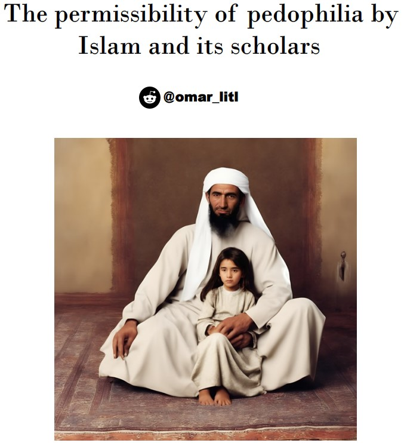

Credit: omar_litl
PDF format: Arabic version, English version.

English Version:
-
Ibn Abd al-Barr (Al-Tamhid 40/12): "The scholars have unanimously agreed that a father can marry off his little daughter without consulting her."
-
Ibn al-Mundhir (Al-Ijma' 78): "The scholars unanimously agree that it is permissible for a father to marry off his little daughter to a suitable match."
-
Ibn al-Mundhir (Al-Ishraf 5/21): "All the scholars we have learned from among the scholars agree on the permissibility of a father marrying off his little daughter."
-
Ibn Qattan (Masa'il Al-Ijma' 2/8): "The scholars unanimously agree that a father can marry off his little daughter without seeking her consent. They differed on whether the adult daughter can be forced into marriage or not."
-
Al-Qurtubi (Al-Mufhim 4/118): "There is consensus that a father can marry off his little daughter and compel her to it without her permission."
-
Bakr ibn al-‘Ala’ (Ahkam al-Qur'an 2/218): "As for the father, he is not included in the meaning of the Hadith which says 'a virgin must be consulted,' because the father can marries her off while she is little, whether she likes it or not."
-
Al-Jawhari (Nawadir al-Fuqaha’ 83): "They unanimously agreed that it is permissible to marry off a little girl."
-
Ibn Abd al-Barr (Al-Tamhid 12/21): "The father has the right to marry off his little daughter by the consensus of the Muslims."
-
Al-Baghawi (Sharh al-Sunnah 9/37): "The scholars agreed that it is permissible for the father and grandfather to marry off a little virgin."
-
Al-Maziri (Ikmal al-Mu’lim 4/572): "There is no dispute among the scholars on the permissibility of a father marrying off his little daughter."
-
Ibn Rushd (Bidayat al-Mujtahid 3/34): "They unanimously agree that a father can compel a prepubescent virgin."
-
Al-Baghawi (Al-Tahdhib 5/256): "Abu Hanifa said that all guardians are allowed to marry off a little girl, whether she is a virgin or previously married. However, the marriage conducted by the father and grandfather is binding, while the marriage by others is not binding, and she has the right to reject it after reaching puberty."
-
Ibn al-‘Arabi (Aridat al-Ahwadhi 5/22): "As for the little virgin, there is no dispute that her father can marry her off, and there is no need to consult her, as she has no opinion to consider."
-
Ibn Hubayra (Ikhtilaf al-A’imma 2/123): "The scholars agreed that the father has the right to compel his little daughter into marriage."
-
Ibn al-‘Arabi (Ahkam al-Qur'an 3/506): "If she is little, he marries her off without her consent, as she has no consent or agreement."
-
Al-Nawawi (Sharh al-Nawawi ‘ala Muslim 9/206): "The Muslims have unanimously agreed on the permissibility of a father marrying off his little virgin daughter."
-
Ibn Hajar (Fath al-Bari 9/124): "Ibn Battal said that it is permissible to marry off a little girl to an older man by consensus, even if she is in the cradle."
-
Abu Shaybah (Musannaf Abi Shaybah 17340): "From ‘Urwa ibn al-Zubayr that he married off a little daughter to Mus‘ab."
-
Abu Shaybah (Musannaf Abi Shaybah 17341): "From Ali ibn Abi Talib that ‘Umar ibn al-Khattab proposed to his daughter Umm Kulthum. Ali said: 'She is little, look at her,' so he sent her a message. He joked with her, and she said, 'If you were not old or the commander of the believers...' 'Umar admired the alliance and proposed to her, so Ali married her to him."
-
Qatadah (Al-Nasikh wal-Mansukh 34): "{And those who have not menstruated yet} refers to the virgin who has not reached menstruation, and her waiting period is three months."
-
Muqatil ibn Sulayman (Tafsir Muqatil): "{And those who have not menstruated yet} refers to the waiting period of girls who have not reached menstruation, who were married and then divorced."
-
Ibn al-Hasan (Al-Asl 6/2): "{And those who have despaired of menstruation among your women, if you doubt, then their waiting period is three months, and those who have not menstruated yet}" – if she does not menstruate due to old age or young age, then her waiting period is three months.
-
Ibn al-Hasan (Al-Asl 4/393): "The waiting period of the woman who has despaired of menstruation and the one who has not reached menstruation, as stated in the Book of Allah, is three months."
-
Al-Shafi'i (Al-Umm 5/227): "For women who have despaired of menstruation and those who have not reached menstruation, their waiting period is months, as Allah says, {And those who have despaired of menstruation, if you doubt, then their waiting period is three months, and those who have not menstruated yet}."
-
Al-Farra’ (Ma’ani al-Qur'an 3/163): "Mu‘adh ibn Jabal asked the Prophet: 'We know the waiting period of the menstruating woman, but what is the waiting period of the older woman who has despaired of menstruation?' So it was revealed: 'Their waiting period is three months.' A man asked: 'O Messenger of Allah, what is the waiting period of the young girl who has not menstruated?' So it was revealed: '{And those who have not menstruated yet}.'"
-
Al-Bayhaqi (Al-Sunan al-Kubra 7/680): "When the waiting period for women was revealed in Surat al-Baqarah, Ubayy ibn Ka‘b said: 'O Messenger of Allah, some people in Medina say there are women who have not been mentioned.' The Prophet asked: 'What are they?' Ubayy replied: 'The young and the elderly.' Then it was revealed: '{And those who have despaired of menstruation, if you doubt, then their waiting period is three months, and those who have not menstruated yet}.'"
-
Al-Bukhari (Sahih al-Bukhari 17/7): Chapter on a man marrying off his little children, based on the verse {And those who have not menstruated}, where their waiting period is made three months before puberty. Aisha reported that the Prophet married her when she was six years old, and consummated the marriage when she was nine, and she remained with him for nine years.
-
Al-Muzani (Mukhtasar al-Muzani 323/8): If the young girl menstruates after the expiration of the three-month waiting period, her waiting period has ended. But if she menstruates before its completion, she is no longer considered among those who have not menstruated, and the menstrual cycles become her waiting period.
-
Al-Tabari (Tafsir al-Tabari 52/23): And similarly, the waiting period for littlegirls who have not yet menstruated, if their husbands divorce them after consummation.
-
Al-Tabari (Tafsir al-Tabari 54/23): {And those who have not menstruated} refers to those who have not yet reached the age of menstruation.
-
Ibn Ishaq (Sirat Ibn Ishaq 255): The Messenger of Allah married Aisha three years after the death of Khadijah, and at that time, Aisha was six years old. The Prophet consummated the marriage with her when she was nine years old, and she was eighteen when he passed away.
-
Al-Shaybani (Al-Asl 186/10): It has reached us from the Messenger of Allah that he married Aisha when she was a young girl of six years, and consummated the marriage with her when she was nine years old.
-
Ibn Wahb (Al-Muwatta 88): Aisha said: The Messenger of Allah married me when I was six years old after the death of Khadijah, and consummated the marriage with me when I was nine years old.
-
Al-Shafi'i (Al-Umm 18/5): Aisha said: The Prophet married me when I was six or seven years old, and consummated the marriage with me when I was nine. The marriage of Abu Bakr giving Aisha to the Prophet at the age of six, and the consummation at nine, shows that the father has more authority over the little virgin than she does over herself.
-
Abd al-Razzaq (Musannaf Abd al-Razzaq 10349): Urwah ibn al-Zubayr said: The Prophet married Aisha when she was six years old, and she was sent to him when she was nine years old, with her toys with her. He died when she was eighteen years old.
-
Ibn Hisham (Sirat Ibn Hisham 644/2): The Messenger of Allah married Aisha, the daughter of Abu Bakr, in Mecca when she was six years old.
-
Ibn Sa’d (Al-Tabaqat al-Kubra 61/10): The Messenger of Allah married Aisha when she was six years old, and consummated the marriage with her when she was nine years old.
-
Al-Kawsaj (Masā'il al-Imām Aḥmad wa Ibn Rāhawayh 3648/7): Ahmad said, "If a girl is nine years old, her accuser of adultery should be flogged, as the Prophet married Aisha when she was nine years old."
-
Al-Dārimī (Sunan al-Dārimī 1451/3): Chapter on Marrying little Girls if Their Fathers Arrange the Marriage: We were told by Aisha that she said, "The Messenger of Allah married me when I was six years old, and I was delivered to him when I was nine years old."
-
Ibn M jah (Sunan Ibn M jah 603/1): Chapter on Marrying Young Girls Arranged by Their Fathers: We were told by Aisha that she said, "The Messenger of Allah married me when I was six years old. We arrived in Medina, and I was delivered to him when I was nine years old."
-
Al-Nasa’i (Sunan al-Nasa’i 82/6): Chapter on a man marrying off his little daughter: Aisha reported that the Messenger of Allah married her when she was six years old and consummated the marriage with her when she was nine.
-
Al-Maturidi (Tafsir al-Maturidi 59/10): It has been established that if you have doubts about the waiting period for women who are past childbearing age or little girls, it is three months.
-
Al-Qasab (Al-Nukat al-Dalah 334/4): The age of maturity for women, according to me, based on the Quranic evidence, is the age at which they can endure intercourse and give birth. Do you not see that it says, "If you have doubts," and doubt can only occur after intercourse with someone who can become pregnant, which was the case with Aisha when the Prophet married her.
-
Ibn al-Arabi (Ahkam al-Qur’an 68/2): {And those who have not menstruated} indicates the validity of divorcing a little girl who has not yet menstruated. Since divorce only occurs in a valid marriage, this verse implies that marrying a little girl is permissible.
-
Al-Jassas (Sharh Mukhtasar al-Tahawi 293/4): The verse {And those who have despaired of menstruation among your women, if you are in doubt, their waiting period is three months, and those who have not menstruated} ruled on the validity of divorcing a little girl and required her to observe the waiting period if she was consummated with. Divorce only occurs in a valid marriage, and according to the Sunnah, the Prophet married Aisha when she was little, and her father Abu Bakr married her to him.
-
Bakr ibn al-'Ala (Ahkam al-Qur’an 218/2): The Prophet married Aisha when she was six years old and consummated the marriage with her when she was nine. Scholars have unanimously agreed that it is permissible for a father to marry off his little daughter.
-
Ibn Hibban (Sahih Ibn Hibban 56/16): Aisha reported that the Prophet married her when she was a little girl and consummated the marriage when she was nine years old. She stayed with him for nine years.
-
Al-Khatabi (Ma'alim al-Sunan 213/3): On the topic of marrying little girls, Abu Dawood reported that Aisha said: The Messenger of Allah married me when I was seven years old, according to some reports, or six years old according to others, and he consummated the marriage with me when I was nine years old. The scholar mentioned that this indicates that the virgin girl whose consent is required for marriage is an adult, not a little girl who has not reached puberty, as consent from someone who is not of age is meaningless, and their approval or disapproval is not considered.
-
Ibn al-Arabi (Ahkam al-Qur’an 285/4): {And those who have not menstruated} refers to little girls.
-
Al-‘Amrani (Al-Bayan 178/9): The waiting period for those who have not menstruated is only for the wife to observe the waiting period after intercourse. This indicates that a little girl who has not menstruated can be married off, and her marriage is valid as long as her father marries her. Aisha reported that the prophet married her when she was seven years old and consummated the marriage when she was nine. It is evident that her consent was not required in this situation, so it is understood that her father married her without her consent, and it is the father or grandfather to compel her into marriage.
-
Al-Razi (Tafsir al-Fakhr 563/30): When the verse "And those who have despaired of menstruation among your women, if you are in doubt, their waiting period is three months" was revealed, a man asked, "O Messenger of Allah, what is the waiting period for a little girl who has not menstruated?" The response was that "And those who have not menstruated" means that it is equivalent to the waiting period of a mature woman who has despaired of menstruation, which is three months.
-
Ibn Qudamah (Al-Mughni 40/7): If a man marries his virgin daughter and places her with a suitable match, the marriage is valid even if she dislikes it, whether she is mature or little. There is no dispute regarding the marriage of a little virgin; Ibn al Mundhir reported that all scholars agree that it is permissible for a father to marry off his litte daughter if he marries her to a suitable match. He is also allowed to marry her off even if she dislikes it or refuses.
-
Ibn Qudamah (Al-Mughni 40/7): The verse "And those who have despaired of menstruation among your women, if you are in doubt, their waiting period is three months, and those who have not menstruated" shows that the waiting period for those who have not menstruated is three months. This implies that such girls can be married and divorced, and their consent is not required for the marriage to be valid.
-
Ibn Qudamah (Al-Mughni 40/7): Aisha said: The Prophet married me when I was six years old and consummated the marriage when I was nine, which is agreed upon. It is known that she was not of an age where her consent was required. Al-Athram reported that Qudamah ibn Mazu’un married the daughter of Al-Zubair when she had just been birth. He said, "She is the daughter of Al-Zubair If I die, she will inherit from me, and if I live, she will be my wife." Ali also married off his daughter Umm Kulthum, who was little, to Umar ibn al-Khattab.
-
Ibn Hajar (Fath al-Bari Sharh Sahih al-Bukhari 101/5): Ibn Batal said that it is unanimously agreed that marrying a little girl to an older man is permissible, even if she is still in the cradle, but sexual relations cannot take place until she is of an appropriate age.
-
Al-Shawkani (Nayl al-Awtar 252/6): The hadith also indicates that it is permissible to marry a little girl to an older man. Al-Bukhari included this in his chapter and mentioned the hadith of Aisha. It was reported in Al-Fath that there is a consensus on the permissibility of this, even if the girl is still in the cradle, though sexual relations cannot occur until she is mature.
-
Al-Nawawi (Sharh Muslim 206/9): Regarding the timing of consummating the marriage with a little girl, if the husband and guardian agree on a time that does not harm the girl, then that should be observed. If they disagree, Ahmad and Abu Ubaidah said that a nine-year-old girl can be compelled to do this, unlike others. Malik, Al-Shafi’i, and Abu Hanifa said that it depends on the girl's ability to endure intercourse, which varies among individuals and is not fixed by age, and this is the correct view.
-
Al-Nawawi (Rawdat al-Talibin 379/4): It is permissible to endow something that is used for its direct benefit, such as trees for their fruit, animals for milk, wool, and eggs, and properties for their utility. It is not required for the benefit or use to be immediate; thus, it is permissible to endow a little slave or a young donkey, and even a woman who is still an infant.
-
Al-Nawawi (Rawdat al-Talibin 459/5): Ibn al-Ḥaddād said: "If a man says to his wife, 'You are divorced three times,' he may immediately marry her sister, as the separation has occurred. The same ruling applies if she apostasizes and he divorces her during her apostasy. If he has both a little wife and an older wife whom he has consummated the marriage with, and the older wife apostasizes, and her mother breastfeeds the little wife during her waiting period, the marriage to the little wife is suspended."
-
Al-Nawawi (Rawdat al-Talibin 425/6): If a man has a little wife and five nursing mothers, and each one nurses the little wife with her milk, the marriage to the little wife is not annulled according to the first view but is annulled according to the second view, which is more accurate. The husband is not liable for the dower if the milk was given sequentially, as the annulment of the marriage pertains to the last nursing. If the nurse is a slave, there is no liability; if she is a wife, the husband is responsible for the dower.
-
Al-Nawawi (Rawdat al-Talibin 434/6): If a man has a little wife and an older wife, and the mother of the older wife nurses the little wife, the marriage to the little wife is definitively annulled, and so is the marriage to the older wife according to the more apparent view. If the grandmother, sister, or niece of the older wife nurses the little wife, the same ruling applies. It is permissible to marry either of them afterward, but not both simultaneously. If the older wife’s daughter nurses the little wife, the ruling on annulment is as previously mentioned. The older wife remains forbidden permanently, and the little wife is forbidden if the older wife had been consummated with, as she becomes the little wife’s stepmother. The dower of the little wife is the responsibility of the husband, and the nursing costs are borne by the nurse, as previously stated.
-
Ibn Hazm (Al-Muhalla 458/9): A father has the right to marry off his little virgin daughter without her permission, and she has no choice in the matter when she reaches puberty.
-
Ibn Hazm (Al-Muhalla 460/9): Abu Muhammad Ibn Hazm argued that the legitimacy of a father marrying off his little virgin daughter is supported by the marriage of Aisha to the Prophet Muhammad at six years old. This is a well-known fact and does not require a chain of narration. Claims that this was a specific case are disregarded in light of the Quranic verse: "There has certainly been for you in the Messenger of Allah an excellent pattern for anyone whose hope is in Allah and the Last Day" (Al-Ahzab: 21). Thus, we are to follow the Prophet’s example unless a specific text indicates otherwise.
-
Al-Bayhaqi (Ma’rifat al-Sunan wa al-Athar 41/10): Aisha said, "The Messenger of Allah married me when I was six or seven years old and consummated the marriage when I was nine, and I used to play with dolls. "Al-Shafi’i, in a narration from Abu Said, stated that the marriage of Aisha at six and the consummation at nine indicates that a father has more authority over a virgin daughter than she does over herself, and it is more appropriate that the father can act on behalf of the little girl until she reaches puberty.
-
Ibn Abd al-Barr (Al-Tamhid 116/12): The difference between Maimuna and Umm Salama, where Aisha was allowed to look at the Ethiopians, is that Aisha, at that time, was not yet of age, as she was married off as a child of six years.
-
Ibn Abd al-Barr (Al-Istidhkar 405/5): Ahmad ibn Hanbal said that neither a judge nor a guardian should marry off an orphan until she is nine years old. If she is married before nine, he should not consummate the marriage until she reaches nine. Ibn Abd al-Barr mentioned that this ruling was derived from the marriage of Aisha, but Allah knows best.
-
Ibn Abd al-Barr (Al-Istidhkar 405/5): Abu Hanifa and Muhammad ibn al-Hasan said that it is permissible for a guardian to marry off a little girl, whether her father or someone else, but she has the right to choose when she reaches maturity. This is the view of Al-Hasan, Ataa, Tawus, Umar ibn Abd al-Aziz, Qatadah, Ibn Shubrumah, and Al-Awza’i. Abu Yusuf said that the little girl has no choice if her father or another guardian marries her. All of these scholars agree that if it is permisible to marry off an adult girl, then it is permissible to marry off a little girl.
-
Al-Ruyani (Bahr al-Madhab 48/9): As for little virgins, their fathers have the right to compel them into marriage without considering their choice. The contract is binding on them both when they are young and when they mature. Similarly, the paternal grandfather can take the father’s place in marrying off the little virgin if the father is absent. The evidence for this, even though it is a consensus, is the verse: "And those who have despaired of menstruation among your women, if you are in doubt, their waiting period is three months, and those who have not menstruated" which refers to little girls. A little girl must observe a waiting period for divorce, indicating that her marriage is permissible even when she is little. Aisha said that the Prophet married her at seven and consummated the marriage at nine.
-
Al-Baghawi (Tafsir al-Baghawi 152/8): "And those who have not menstruated" refers to little girls who have not menstruated, and their waiting period is three months.
-
Ibn Rushd (Al-Bayan wa al-Tahsil 388/5): Three months is the waiting period for a little girl who has not reached menstruation.
-
Al-Marzi (Al-Mu’allim 144/2): "{And those who have not menstruated}" This indicates that the marriage contract with those who have not menstruated is valid before puberty.
-
Al-Zamakhshari (Tafsir al-Zamakhshari 557/4): "{And those who have not menstruated}" refers to little girls.
-
Ibn al-Jallab (Al-Tafri' fi Fiqh al-Imam Malik 361/1): Malik, may Allah have mercy on him, said: "It is permissible for a father to contract marriage for his little daughter, whether she is a virgin or previously married, and it is permissible for him to contract marriage for an adult virgin without her consent."
-
Ibn Hazm (Al-Muhalla 38/9): "The father has the right to marry off his little daughter who has not reached puberty without her consent, and she has no choice when she reaches puberty. The proof for allowing the father's marriage of his little daughter is the marriage of Aisha by Abu Bakr, may Allah be pleased with him, to the Prophet when she was six years old."
-
Abu Dawood (Sunan Abu Dawood 4933): Aisha said, "Umm Ruman came to me while I was on a swing, took me, prepared me, and presented me to the Messenger of Allah. He consummated with me when I was nine years old."
-
Al-Nasa'i (Al-Sunan al-Kubra 5542): According to Urwah bin al-Zubair, "She was brought to him when she was nine years old, and he played with her."
-
Abdullah Ibn Qudamah (Al-Mughni 210/9): "If a man marries a mature woman and a little girl and has not consummated the marriage with the mature woman, and she breastfed the little girl within the first two years period, the mature woman becomes forbidden to him. The marriage with the little girl remains valid. If he has consummated the marriage with the mature woman, both become forbidden to him, and he can claim half the dowry of the little girl from the mature woman. Ahmad has confirmed this."
-
Abdullah Ibn Qudamah (Al-Mughni 214/9): "If the daughter of the mature woman breastfeeds the young girl, the prohibition and annulment of the marriage are as if the mature woman herself had breastfed her, as she becomes her grandmother. The dowry should be returned to the wet nurse who caused the annulment. If the mature woman’s mother breastfeeds the young girl, their marriage is annulled because they become sisters. If he has not consummated the marriage with the mature woman, he may marry either of them."
-
Abdullah Ibn Qudamah (Al-Mughni 159/9): "As for the little girl who cannot be consummated, it is clear from al-Khuraqi’s statement that kissing and touching her for pleasure are forbidden before her purification, and this is the apparent opinion of Ahmad. In most reports from him, it is said: 'She should be purified even if she is in the cradle.'"
-
Abdullah Ibn Qudamah (Al-Mughni 160/9): "It is reported from him that he said: 'How can a little girl be purified if she is an infant?' In another narration, he said: 'She should be purified with a menstruation if she is one who menstruates, otherwise by three months if she is one who can be consummated and conceive.' This implies that she does not need purification, and there is no prohibition on touching her. This is the opinion of Ibn Abi Musa and Malik, and it is the correct view because the reason for permissibility is established, and there is no evidence for prohibition. Prohibition of touching an adult woman is due to it leading to unlawful intercourse or fear of her bearing a child for someone else, which does not apply here, so permissibility should be observed."
-
Ibn Nujaym al-Misri (Al-Bahr al-Ra'iq 210/3): "There is disagreement about the time of consummating the marriage with a little girl. Some say he should not consummate the marriage until she reaches puberty. Others say he may do so when she reaches nine years old, and others say if she is mature enough to endure intercourse, he may consummate the marriage; otherwise, he should not."
-
Ibn Nujaym al-Masri (Al-Bahr al-Ra'iq 267/3): “Al-‘Afl” is something round that exits from the vagina, and if she is so young that she cannot bear intercourse, it is not permissible for him to have intercourse with her before she is able to. The age of maturity is specified by puberty, or in this case, nine years old. It is preferable not to set a specific age as previously mentioned. If the husband wishes to have intercourse and the father denies, the judge should show her to women for examination without considering her age, as stated in the summary.
-
Ibn Omar al-Shafi'i (Nihayat al-Zain 1/334): The term “full consent” excludes incomplete consent, such as if the girl is small and cannot bear intercourse, even if he engages in preliminary acts like kissing, embracing, and other pleasures.
-
Al-Rafi'i (Al-Aziz 435/9): “Those who do not menstruate” due to youth or menopause, their waiting period after divorce is three months. Allah says: “And those who have despaired of menstruation among your women, if you doubt, then their term is three months, and for those who have not menstruated.”
-
Baha' al-Din al-Maqdisi (Sharh al-‘Umdat 393): The father has the right to marry off his little virgin daughter without disagreement, as Allah says: “And those who have despaired of menstruation among your women, if you doubt, then their term is three months, and for those who have not menstruated.” The waiting period of three months is only from a divorce in a valid marriage, indicating that she can be married and divorced without her consent being required, as was the case when Abu Bakr married Aisha to the Prophet when she was six without seeking her consent.
-
Al-Qurtubi (Tafsir al-Qurtubi 165/18): “And those who have not menstruated” means little girls. Their waiting period is three months.
-
Ibn al-Samman (Rawdat al-Qudat 853/2): Abu Bakr married Aisha when she was a small girl, seven years old, and the Prophet consummated the marriage when she was nine. Similarly, Ali married Umm Kulthum to Umar ibn al-Khattab while she was still little. According to our scholars, Shafi’i, Malik, and most jurists, it is permissible for the father to marry off a little girl, and if she were supposed to have a choice, then Aisha would have been given a choice.
-
Al-Hakim (Al-Mustadrak 3821): When the verse in Surah al-Baqarah regarding the waiting period for women was revealed, they said that there were women not mentioned: the little and the old, those who had ceased menstruation, and those who were pregnant. Allah then revealed the verse in Surah al-Nisa: “And those who have despaired of menstruation among your women, if you doubt, then their term is three months, and those who have not menstruate, and those who are pregnant, their term is until they give birth.”
-
Abdul Wahhab al-Qadi (Al-Mu’ina 718): Regarding “those who have not menstruated,” it was established that for those who have not menstruated, the waiting period is set. Waiting periods are required only after separation in a valid marriage. The Prophet married Aisha when she was six and consummated the marriage when she was nine.
-
Makkī ibn Abī Ṭālib (Al-Hidāyah 7544/12): The address to men indicates that the ruling applies if there is doubt about the waiting period. Moreover, “and those who have not menstruated” refers to little girls who have not reached puberty. Their waiting period is three months.
-
Ibn Abī Shaybah (Sharh Ṣaḥīḥ al-Bukhārī 247/7): According to Aisha, the Prophet married her when she was six years old and consummated the marriage when she was nine. She stayed with him for nine years. Scholars unanimously agree that it is permissible for a father to marry off his little daughter, as per the general interpretation of the verse “and those who have not menstruated,” and that it is permissible to marry someone who has not menstruated from the moment she is born.
-
Al-Baghaw (Shar al-Sunnah 35/9): Aisha said, “The Prophet married me when I was seven years old and consummated the marriage when I was nine years old, and I used to play with dolls.”
-
Al-Nasafi (Talabatu Al-Talaba 42): "It is narrated that the Prophet married Aisha when she was a little girl of six years old."
-
Iyad Al-Sabti (Ikmal Al-Mu'allim 4/573): "Aisha said, 'The Prophet married me when I was six years old, and consummated the marriage when I was nine years old.' This hadith is foundational for determining the appropriate time for consummation in cases of disagreement. Some scholars have ruled that a nine-year-old girl can be forced to consummate the marriage. This is the opinion of Ahmad and Abu Ubayda. Malik and Al-Shafi'i stated that the criterion is her ability to bear intercourse, and Al-Shafi'i added that it should be near puberty. Abu Hanifa said the criterion is the ability to bear intercourse, even if she is not yet nine."
-
Al-'Imrani (Al-Bayan 9/178): "Aisha narrated, 'The Prophet married me when I was seven years old, and consummated the marriage when I was nine years old.' It is known that her consent had no bearing at that age, and it is clear that her father arranged the marriage without her consent. It is permissible for a father or grandfather to force a little girl into marriage, but no other guardian may do so until she reaches maturity."
-
Ibn Qudamah (Al-Mughni 1/151): "If the one having intercourse or the one being consummated is a little, Imam Ahmad ruled that both are required to perform ghusl (ritual purification). He said, 'If a girl reaches nine years old and is fit for intercourse, she must perform ghusl.' He was asked about a boy who had intercourse with a woman but had not reached puberty: does he and the woman both need to perform ghusl? He replied, 'Yes, whether or not ejaculation occurred,' and cited the example of Aisha, who would perform ghusl after the Prophet had intercourse with her."
-
Ibn Qudamah (Al-Mughni 7/40): "Ibn al-Mundhir stated that there is consensus among all the scholars we know that a father can marry off his little virgin daughter, and it is permissible to do so even if she dislikes and refuses it. The permissibility of marrying off a little girl is based on Allah’s statement {And those who have not yet menstruated} [Quran 65:4], indicating that she can be married and divorced, and that her consent is not required."
-
Al-Jama'ili (Al-Sharh Al-Kabir 7/386): "The permissibility of marrying a little girl is derived from Allah's statement {And those who have not yet menstruated}, which assigns a waiting period of three months for such girls. Since the waiting period is only applicable in the case of divorce from a valid marriage or annulment, this indicates that the girl can be married and divorced without her consent. Aisha said, 'The Prophet married me when I was six years old and consummated the marriage when I was nine.'"
-
Al-Baydawi (Tafsir Al-Baydawi 5/221): "{And those who have not yet menstruated} refers to those who have not menstruated due to their young age."
-
Al-Tanukhi (Al-Mumt’a 3/553): "As for the permissibility of a father marrying off his little virgin daughters who are under nine years old without their consent, there is no dispute on this matter. This is supported by Allah’s statement {And those who have not yet menstruated} [Quran 65:4], which indicates that their waiting period is also three months. The waiting period of three months is only applicable after a divorce in a valid marriage or annulment, indicating that marriage and divorce are permissible without her consent. Aisha said, 'The Prophet married me when I was six years old and consummated the marriage when I was nine.'"
-
Al-Qastalani (Irshad Al-Sari 8/52): "{And those who have not yet menstruated} refers to little girls, and their waiting period is three months before reaching puberty, indicating that marriage before puberty is permissible."
-
Zakariya Al-Sanniki (Minhat Al-Bari 8/370): "{And those who have not yet menstruated} means their waiting period is three months, which indicates that marriage before puberty is permissible."
-
Abu Saud Al-‘Imadi (Tafsir 8/262): "{And those who have not menstruated} due to their young age, meaning their waiting period is also three months."
-
Al-Suyuti (Al-Durr Al-Manthoor 8/202): "{And those who have not menstruated} are the young girls who have not reached puberty; their waiting period is three months."
-
Al-Kurani (Al-Kawthar Al-Jari 8/468): "The permissibility of marrying little girls is supported by the verse: {And those who have not menstruated}."
-
Al-Suyuti and Al-Mahalli (Tafsir Al-Jalalayn 749): "{And those who have not menstruated} due to their young age; their waiting period is three months."
-
Ibn Hammam (Fath Al-Qadeer 3/274): "It is permissible to marry a little girl if her guardian marries her, according to the verse {And those who have not menstruated}. This establishes the waiting period for a little girl and shows that the marriage of little girls is not restricted by the specific case of Aisha, as evidenced by the marriage of Qudamah bin Mazyun’s daughter on the day she was born, was known to the Companions."
-
Badr Al-Din Al-Ayni (Al-Binaya 5/90): "The verse {And those who have not menstruated} clarifies the waiting period for a little girl. The waiting period is determined by marriage, which confirms the permissibility of marrying little girls. The well-known Hadith about Aisha, who was married at six and consummated the marriage at nine, is close to being mutawatir (widely accepted)."
-
Nizamuddin Al-Qummi (Tafsir Al-Nisaburi 1/624): "If menstruation does not occur due to extreme youth, the waiting period is three months, as stated in {If you are in doubt, then their waiting period is three months, and those who have not menstruated}."
-
Al-Siwasi (Sharh Fath Al-Qadeer 3/383): "There is no maintenance due for a little girl who cannot consummate the marriage until she reaches an age where she can endure intercourse, whether she is in her husband's house or her father's. There is disagreement about the minimum age: some say seven years, while Al-‘Atabi says the opinion of our scholars is nine years. The correct view is that there is no fixed age, as it varies with physical development."
-
Al-Sarakhsi (Al-Mabsut 4/212): "The Prophet married Aisha when she was a little girl of six years and consummated the marriage when she was nine years old. This Hadith indicates the permissibility of marrying little girls by their parents. Additionally, Qudamah bin Mazyun married the daughter of Al-Zubair when she was born, and Ibn Umar married his little daughter to ‘Urwa bin Al-Zubair. Also, ‘Urwa bin Al-Zubair married his niece while both were little, and a man gifted his little daughter to Abdullah bin Al-Hasan, which was approved by Ali. A woman married her little daughter to a son of Al-Musayyib bin Nukhba, and Abdullah approved it."
-
Al-Sarakhsi (Al-Mabsut 4/213): "This provides evidence that a little girl can be married off if she is suitable for marriage. Aisha was married at nine years old. Although she appeared little, they nourished her, and when she was mature enough, she was married to the Prophet."
-
Ibn Abidin (Hashiyat Rad Al-Muhtar 3/223): "It is stated that a little wife who cannot bear intercourse should not be handed over to her husband until she is capable of it. The correct view is that this is not determined by age but by the judge's assessment of her physical development, such as whether she is well nourished or emaciated. It has been previously mentioned that a mature girl who cannot endure intercourse should not be delivered to her husband either. This includes situations where the inability is due to weakness, emaciation, or the size of the husband's organ. The judge should ensure that the intercourse is within the girl's capacity or the size of a moderately proportioned man."
-
Abdul Rahman bin Qudamah (Al-Sharh Al-Kabir 9/206): "If a man marries a mature woman and has not yet consummated the marriage, and marries three little girls, if the mature woman nurses one of the little girls within the two years period, the mature woman becomes permanently forbidden to him and the marriage to the young girl is valid. If he marries a mature woman and a little girl, and the mature woman nurses the little girl before consummating the marriage, the marriage to the mature woman is invalidated immediately and she is permanently forbidden to him. This is the view of Al-Thawri, Al-Shafi'i, Abu Thawr, and the followers of Abu Hanifa."
-
Abu Al-Manaqib Al-Zanjani (Takhreej Al-Furu' Ala Al-Usul 1/193): "There is a disagreement among scholars about the nature of a marriage contract. Al-Shafi'i believed that the contract is about the benefits, including the benefits of the sexual relationship, supported by two arguments. Abu Hanifa believed that the contract pertains to the described permissible individual, and thus the ownership of the individual. He argued that if the contract were about the benefits, then marrying an infant would not be valid."
-
Al-Buhuti (Kashaf Al-Qina' 5/524): "If a man marries a mature woman who has milk from another man, whether the second is a husband or otherwise, and he has not yet consummated the marriage with her, and then marries three little girls under the age of two, if the mature woman nurses one of the little girls, the mature woman is forever forbidden to him because she becomes one of his 'mothers-in-law.' The marriage to the little girl remains valid because she is a stepchild and he has not consummated the marriage with her mother. The situation differs from if he had started the marriage contract with both. The continuation of the marriage is stronger than the initiation. If the mature woman nurses two little girls, either separately or together, their marriages are annulled."
-
Ibn Abidin (Hashiyat Rad Al-Muhtar 3/630): "He pointed out that, as mentioned in Al-Zaylai, there is no age limit for assessing whether a girl is suitable for intercourse. A well-nourished little girl, even if young in age, may be capable of intercourse."
-
Muhammad bin Al-Sharbini (Mughni Al-Muhtaj 3/182): "The term 'no child' might imply that there is no requirement for the wife to be of a certain age; thus, intercourse with her is permissible even if she is a child who cannot be sexually consummated."
- Al-Asgalani (Fath Al-Bari 7/664): "There is confusion about Ali having relations with a young girl without a waiting period and also about his share. The first issue is explained by the fact that she was a prepubescent virgin and similar cases do not require a waiting period, as understood by other Companions."
- Ibn Qayyim (Bada'i' Al-Fawa'id 4/97): "In some cases, a man might fear that his bladder or other organs might rupture due to excessive sexual desire. In Ramadan, if water is extracted without breaking the fast, it can be done using means that do not invalidate the fast, such as by masturbation with his hand or using his little slave girl, though it is allowed to have intercourse with her only in ways other than the vagina. If the desire can be relieved by other means, intercourse with her is not allowed, as necessity only justifies what is required."
- Ibn Qudamah (Al-Mughni 8/120): "Regarding a little girl who is not capable of intercourse, it is clear from the words of Al-Khiragqi that kissing and touching her for sexual pleasure are prohibited before she is properly prepared. This is the apparent view of Ahmad, who stated that she should be prepared for intercourse even if she is still in the cradle. There is also a view that preparation is necessary for even a nursing infant."
- Ibn Al-Rifa'ah (Kifayat Al-Nabih 15/25): "Abu bin Ka'b said that some people in Medina were doubtful about the waiting period for little girls, elderly women, and pregnant women. I went to the Prophet and informed him about this, and Allah revealed the verse {And those who have despaired of menstruation among your women, if you are in doubt, their waiting period is three months, and those who have not menstruated}."
- Al-Mawardi (Al-Hawi Al- Kabir 9/52): "{ And those who have not menstruated} refers to little girls. A little girl must observe a waiting period from the divorce of her husband, which indicates that marriage to a young girl is permissible. It was narrated from Aisha that the Prophet married her when she was seven years old and consummated the marriage when she was nine."
- Al-Baji (Al-Muntaha 3/272): "Regarding little girls, there is no disagreement that a father has the right to compel them to marry, and this is based on the verse {And those who have despaired of menstruation among your women, if you are in doubt, their waiting period is three months, and those who have not menstruated}. This verse establishes the waiting period for those who have not menstruated, which only applies to marriage. Additionally, the Hadith from Aisha states that the Prophet married her when she was six and consummated the marriage when she was nine."
- Al-Qurtubi (Tafsir Al-Qurtubi 18/162): "When the verse {And the divorced women shall wait for three periods} was mentioned, Khalad bin Al-Nu’man asked the Prophet about the waiting period for those who had not menstruated and those whose menstruation had stopped. The verse {And those who have despaired of menstruation among your women, if you are in doubt, their waiting period is three months, and those who have not menstruated} was revealed."
- Al-Bukhari (Sahih Al-Bukhari 6130): "Aisha said: 'I used to play with dolls in the presence of the Prophet, and I had friends who played with me. When the Prophet entered, they would hide from him, and he would direct them to come back to me so that they could play with me."
- Muslim (Sahih Muslim 2443): "Aisha said: 'I used to play with dolls in the presence of the Prophet, and my friends would come to me. When they saw the Prophet, they would hide, and he would let them come to me."
- Abu Dawood (Sunan Abu Dawood 4931): "Aisha said: 'I used to play with dolls, and sometimes when the Prophet entered, my friends would leave. When he left, they would come back in.""
- Al-Nasa'i (Sunan Al-Nasa'i 3378): "Aisha said: "The Prophet married me when I was six years old and consummated the marriage when I was nine. I used to play with dolls.
- Abu Awanah (Mustakhraj Abu Awanah 4265): "Aisha said: 'Some women from the Ansar came to me while I was playing on a swing. They dressed me, bathed me, and then took me to the Prophet while I was playing with dolls."
- Al-Hama'ili (Sharh Al- Kabir 1/203): "If a young girl reaches the age of nine, and someone of her age can be sexually penetrated, she is required to perform ghusl (ritual purification). It was asked about a boy who has sexual intercourse with a woman without reaching puberty; both are required to perform ghusl. He replied, "Yes.' It was then asked if ejaculation occurred or not, and he said, 'Yes.' This is supported by the practice of Aisha when the Prophet used to have sexual relations with her."
- Al-Zayla'i (Tebyin Al-Hagqa'ig 1/137): "The woman being married must be of a desirable age, such as being seven years old, in reference to the marriage of Aisha to the Prophet. He did not marry her until she was suitable for marriage."
- Ibn Al-Qayyim (Zad Al-Ma'ad 5/528): "The waiting period for a woman who does not menstruate is of two types: a little girl who does not menstruate and an older woman who has despaired of menstruation. Allah explained the waiting period for both types in His saying, {And those who have not menstruated}."
- Al-Zarkashi (Sharh Al-Zarkashi 5/78): "There is no dispute among scholars, as far as we know, that a father has the right to marry off his virgin daughter who has not yet reached the age of nine, even if she dislikes it, provided he ensures her well- being. This is supported by the verse {And those who have despaired of menstruation from your women, if you are in doubt, their waiting period is three months, and for those who have not menstruated}, which indicates that a little girl can be married and divorced without her consent being required."
- Ibn Kathir (Tafsir Ibn Kathir 8/149): "Likewise, for little girls who have not reached menstruation, their waiting period is like that of women who have despaired, which is three months. This is indicated by the verse {And those who have not menstruated}."
- Ibn Al-Mulaqgin (Tawdih 24/408): "transmitted the consensus that a father is allowed to marry off his small daughter who cannot be sexually penetrated, based on the generality of the verse, and it is also permissible to marry someone who has not yet menstruated from birth."
- Ibn Noor Al-Din (Tayseer Al-Bayan 4/267): "They asked about the waiting period for those who menstruate, and what about those who do not menstruate or have not yet menstruated. Allah explained this with the verse, stating that the waiting period for those who have despaired is three months, and the same applies to young girls who have not menstruated. This is the consensus of the Muslims."
- Ibn Umar (Nihayat Al-Zain fi Irshad Al-Mubtadi'een 334): "If a girl is too young to endure sexual intercourse, even if pleasure is derived from preliminary actions, she is not entitled to maintenance."
- Ibn Humam (Fath Al-Qadeer 4/384): "There is no maintenance for a little girl who cannot engage in sexual intercourse. She is not entitled to maintenance until she reaches an age where she can endure it, whether she is in her husband’s house or her father’s. Opinions vary: some say the minimum age is seven years, while others, like Al-Ittabi, believe it is nine years. The correct view is that there is no fixed age, as endurance varies with physical development."
- Al-Nawawi (Rawdat Al-Talibin 5/315): "It is permissible to marry the infant girl."
- Ibn Taymiyyah (Majmoo' al-Fataawa 32/39): "A woman should not be married off without her consent, as the Prophet (peace and blessings be upon him) commanded. If she dislikes it, she should not be forced into marriage, except in the case of a little virgin girl, as her father may marry her off without her consent."


 Hassan Radwan
Hassan Radwan